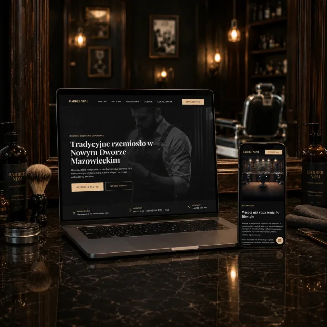
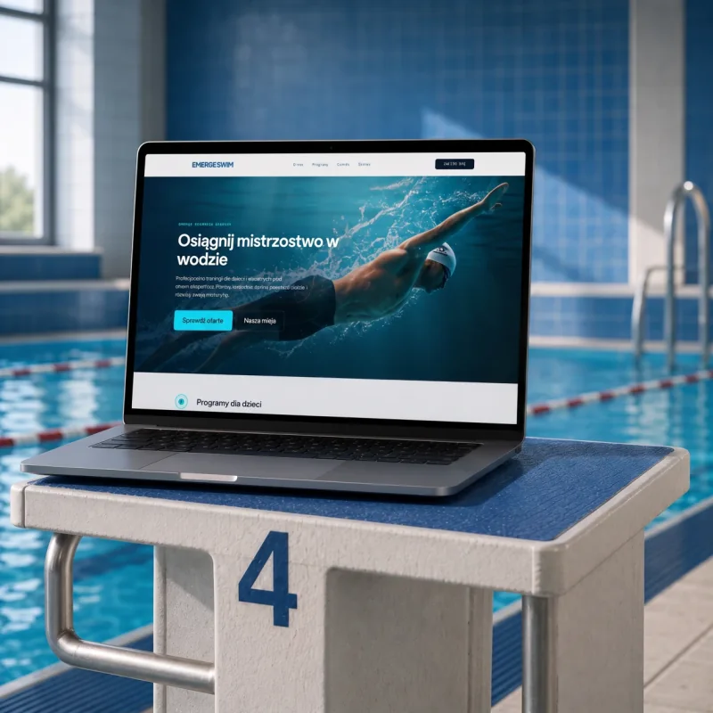
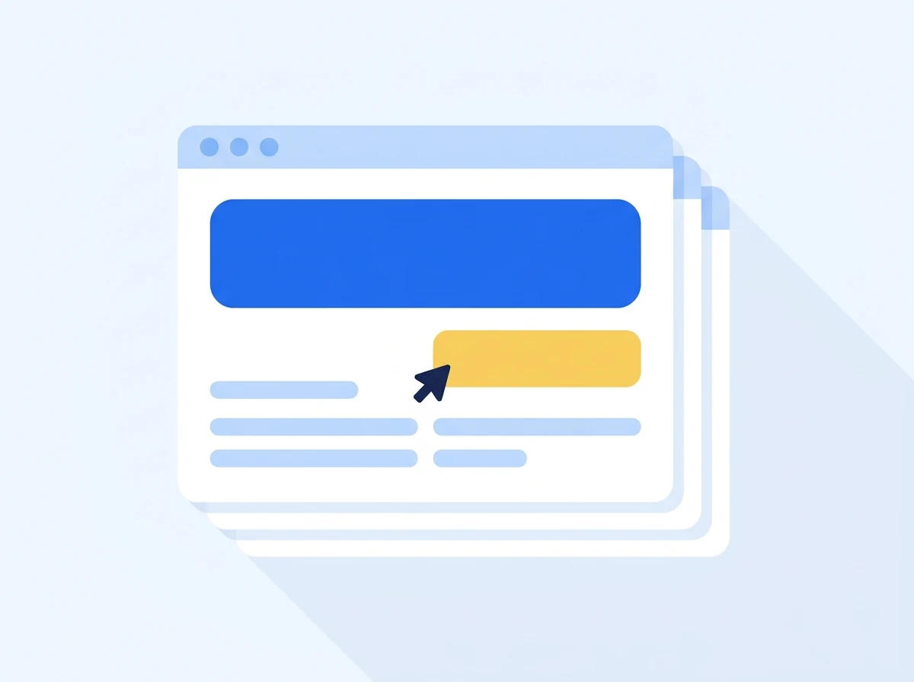
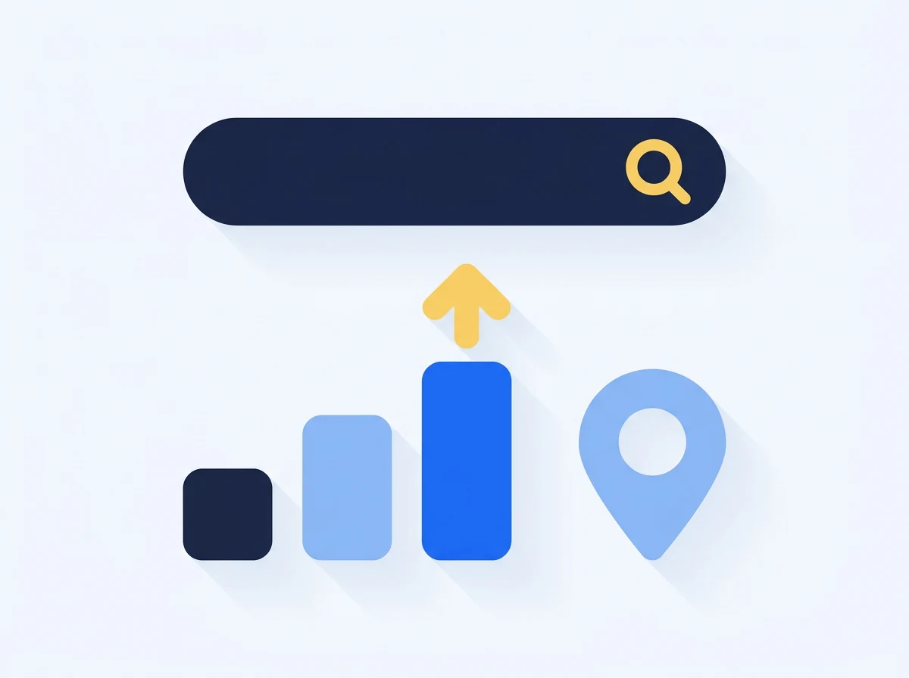
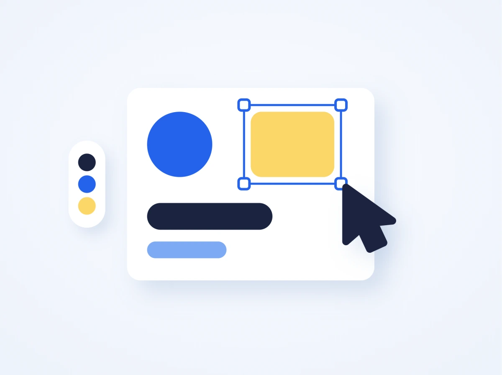
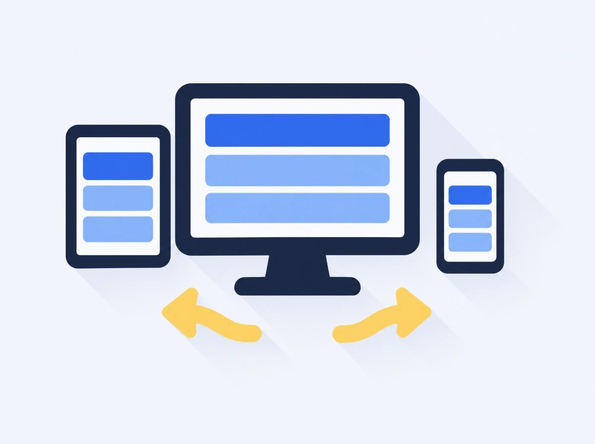
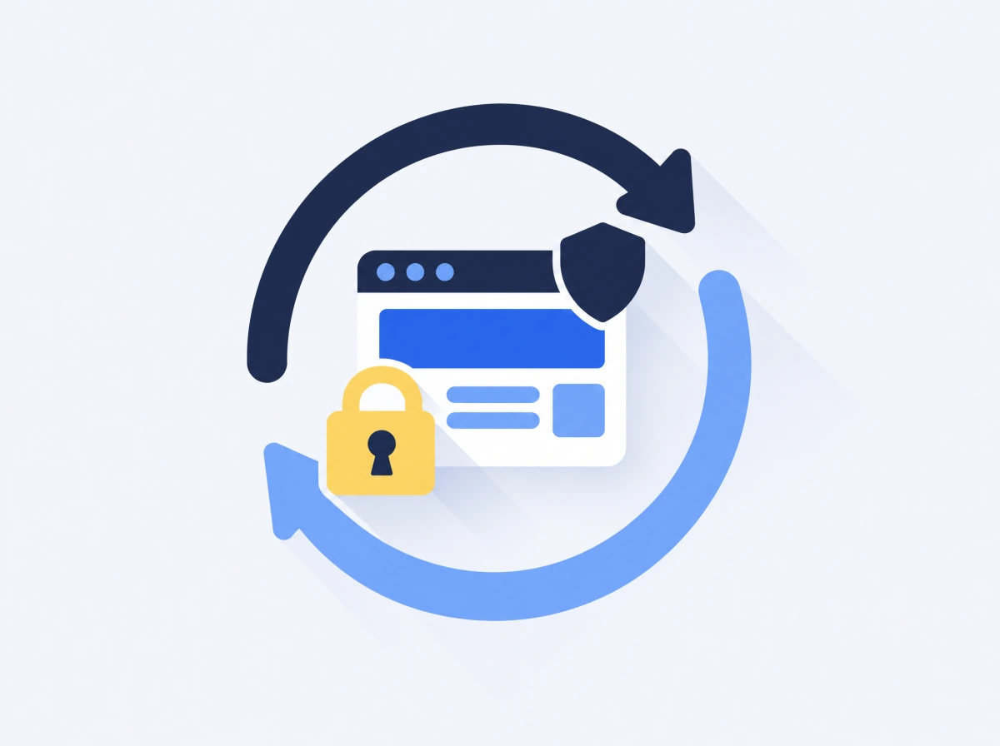
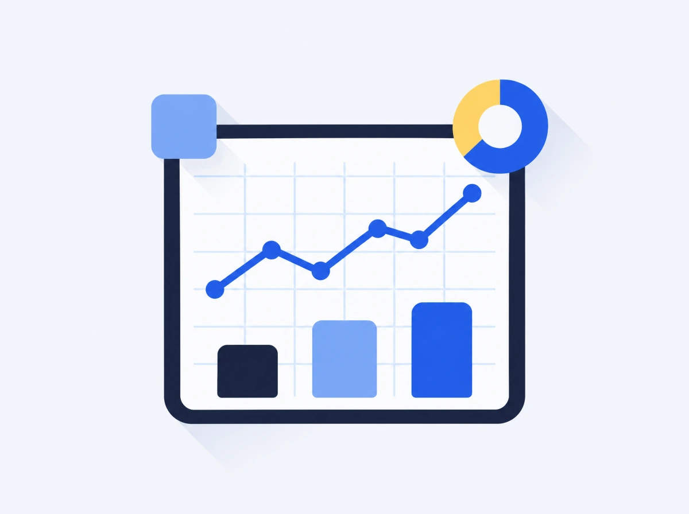
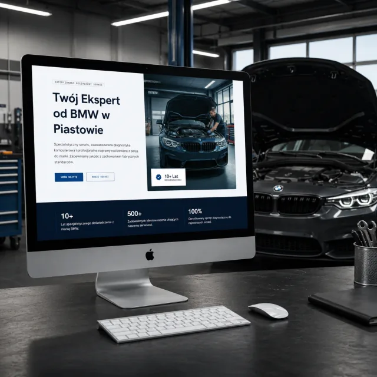
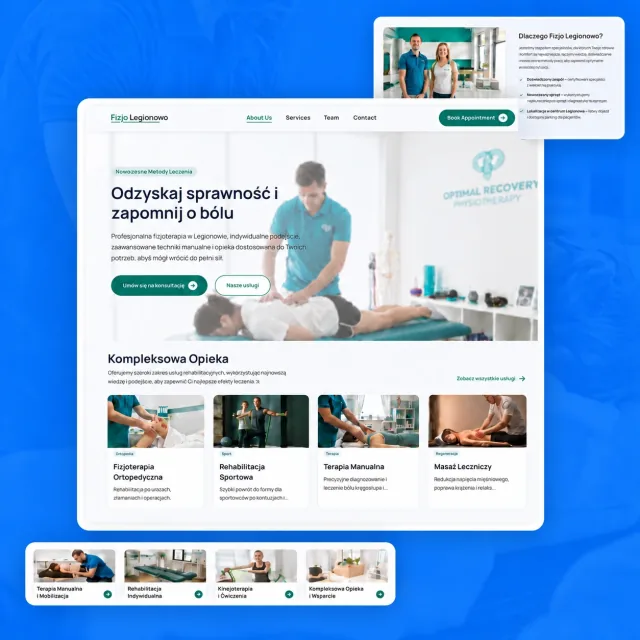

Kompleksowa oferta dla lokalnych firm
Tworzę nowoczesne strony: od projektu i designu, przez widoczność w Google, po wsparcie po wdrożeniu.

Od szkicu do gotowej strony
Projekt, wdrożenie, widoczność w Google i opieka po starcie. Wszystko u jednej osoby.
Strony internetowe
Projektuję strony, które dobrze wyglądają, są czytelne na każdym urządzeniu i pomagają klientom szybciej podjąć decyzję o kontakcie: od prostej wizytówki po rozbudowaną ofertę usług.
Przejrzysta strona, która przedstawia Twoją firmę, usługi i dane kontaktowe. Idealna na start i do budowania wiarygodności.
Jedna, skoncentrowana strona nastawiona na konkretny cel: telefon, zapytanie lub rezerwację.
Wyraźne przyciski CTA i prosty formularz, dzięki którym łatwo zamienić odwiedzającego w klienta.

SEO — widoczność w Google
Podstawowa optymalizacja pod Google już na etapie budowy strony. Dbam o to, żeby strona nie tylko dobrze wyglądała, ale też realnie pracowała na Twoich nowych klientów.
Poprawna struktura nagłówków H1–H3, przyjazne adresy URL oraz mapa strony, które ułatwiają Google zrozumienie i indeksowanie Twojej witryny.
Optymalizuję wagę grafik i kod, aby strona ładowała się błyskawicznie. To jeden z czynników, które Google bierze pod uwagę w rankingu.
Ustawiam stronę pod frazy z Twojego miasta i okolicy oraz przygotowuję ją pod wizytówkę Google, żeby klienci z regionu trafiali właśnie do Ciebie.

Indywidualny design
Projekt dopasowany do marki, a nie gotowy szablon „jak każdy”. Nowoczesny UX i design, dzięki któremu wyróżnisz się na tle konkurencji i zdobędziesz nowych klientów.
Żadnych gotowych szablonów „jak każdy”. Układ i styl dopasowuję do Twojej marki, branży i klientów.
Logiczna nawigacja, czytelne sekcje i intuicyjna ścieżka do kontaktu, tak aby klient nie musiał się zastanawiać, co dalej.
Kolory, typografia i elementy graficzne tworzą spójny, profesjonalny wizerunek na całej stronie.

Responsywność
Tworzę strony, które wyglądają dobrze na telefonie, tablecie i komputerze. Bez wyjątków i bez kompromisów. Najważniejsze informacje są zawsze łatwo dostępne na małym ekranie.
Strona wygląda i działa dobrze na każdym ekranie — bez ściskania, przewijania w bok i drobnego, nieczytelnego tekstu.
Projektuję z myślą o telefonie, z którego korzysta większość Twoich klientów, a dopiero potem o większych ekranach.
Duże, wygodne przyciski oraz odpowiednia wielkość tekstu ułatwiają korzystanie ze strony jednym kciukiem.

Opieka nad stroną
Masz już stronę, ale nie masz czasu, żeby się nią zająć? Zajmuję się aktualizacjami, poprawkami i rozwojem istniejących stron. Ty skupiasz się na firmie, a strona rozwija się razem z nią.
Bieżące zmiany treści, cen, godzin czy zdjęć oraz drobne poprawki. Bez stresu i bez długiego czekania.
Dokładam nowe podstrony i sekcje w miarę rozwoju Twojej firmy i pojawiania się nowych usług.
Dbam o aktualność i kopie zapasowe, a Ty masz jedną osobę do kontaktu, która zna Twoją stronę i szybko reaguje.

Analityka Google
Podpinam Google Analytics do mierzenia ruchu na stronie. Dzięki temu wiesz, ile osób odwiedza stronę, skąd przychodzą i czy wykonują ważne działania, np. dzwonią lub wysyłają zapytanie.
Podpinam GA4, dzięki czemu zobaczysz, ile osób odwiedza stronę, jak długo na niej zostają i jak z niej korzystają.
Sprawdzisz, skąd przychodzą klienci: z Google, z social mediów czy z wizytówki, i w co warto inwestować.
Mierzę ważne działania: kliknięcie w numer telefonu, wysłanie formularza czy kliknięcie w mapę dojazdu.

Stwórzmy razem coś
wyjątkowego dla Twojej firmy
Umów konsultację
Przykładowe projekty
Koncepcje stron dla różnych branż, które pokazują mój styl pracy: od salonu po serwis samochodowy.

Serwis BMW
